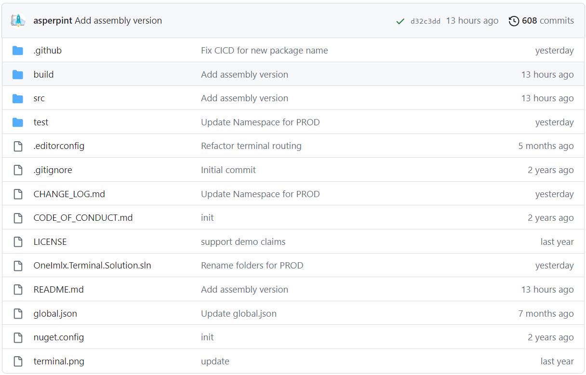

Terminal Framework
OneImlx.Terminal is a cross-platform, adaptable framework designed for developing modern and secured terminal applications. It simplifies terminal infrastructure complexity, enabling developers to focus on building enterprise-grade terminal applications with Unicode support and extensive command hierarchies.
- Utilize microservices architecture, Dependency Injection (DI), and options pattern to design and configure your terminal apps.
- Access built-in features or develop your own solutions for terminal UX, input parsing, error handling, command validation, data storage, and type verification.
- Choose high-performance in-memory command storage or integrate with remote storage solutions.
- Ensure compatibility with Windows, Linux, macOS, Docker, Kubernetes, and more.
- Create deployment-agnostic CLI terminals, testing locally, and deploying on-premise, in the cloud, or in hybrid environments.
- Develop secure, enterprise-level CLI and terminal applications, adhering to OAuth and OpenID Connect (OIDC) standards.
- Engage with our open-source community for issue resolution, feature enhancements, and documentation contributions.
- Quickly onboard with our demo license and GitHub samples, no signup required.
Easily transform any .NET ecosystem feature into a modern Unicode terminal app.
Open Source
The terminal framework is fully open-source, with all source code available on GitHub, encouraging community collaboration and feedback.

Our DevOps builds the framework with GitHub hosted runners for various OS platforms, supporting all platforms compatible with .NET.
Access licensed packages via Nuget:


Integration
OneImlx.Terminal provides a scalable, flexible framework, decoupling the terminal's backend logic from the frontend, ideal for developers integrating command-line functionalities into various applications.
Enhanced Integration with .NET Ecosystem
OneImlx.Terminal ensures seamless integration with the .NET stack, streamlining the development of different terminal application types:
Console Applications
Enhance console applications with advanced command handling by incorporating OneImlx.Terminal.
Custom UX Implementations
Utilize ASP.NET Core, Blazor, and Blazor WebAssembly (WASM) with OneImlx.Terminal to craft custom, responsive terminal user interfaces. The framework, acting as a comprehensive terminal parsing and execution engine, allows developers to create dynamic UX for server-side and client-side terminal applications. It handles complex command executions efficiently and adapts to various .NET frameworks, supporting flexible command execution syntax for sophisticated, secure terminal applications.
Backend Services Integration
Incorporate OneImlx.Terminal in your backend API projects for uniform command syntax across all APIs, relaying commands to the backend terminal server for execution. Ideal for developing server-side terminal applications, it facilitates command processing and communication with backend microservices. Operating in secure server-side environments, OneImlx.Terminal supports modern terminal applications with secure access. Developers can enhance security with a Zero Trust model for each command execution, thereby streamlining command processing and bolstering application security.
On-Premise Server Applications
OneImlx.Terminal excels in on-premise server applications, aligning with internal policies and infrastructure. It offers tools and flexibility for managing and deploying terminal applications in secure, controlled environments.
Other Frontend Integration
Develop various frontend terminal applications using technologies like React, Vue.js, Electron, or MAUI, communicating with a .NET-based terminal server for command processing and execution.
Web and Cloud Native Applications
Create web and cloud native terminal applications using JavaScript frameworks, interacting with a .NET-based terminal server for command execution.
Server Applications in Other Languages
Build server-side applications in Python, Java, or other languages, integrating with the .NET-based terminal server for robust command execution.
Note: OneImlx.Terminal supports TCP/IP for client-server communication within terminal apps, with future plans to add gRPC and HTTP, enhancing communication protocol versatility.
Flexible Deployment Options
Deploy the backend terminal server as needed:
- On-Premise: Maintain full control and comply with internal policies.
- Cloud: Leverage cloud infrastructure scalability.
- Containerized Environments: Simplify deployment and scaling.
OneImlx.Terminal ensures flexibility in choosing tools while maintaining a robust backend.
Feedback
Submit issues or feature requests directly on GitHub.